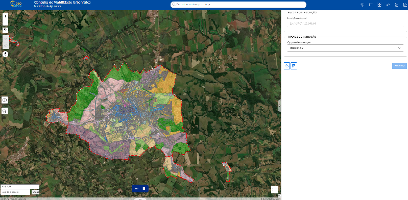
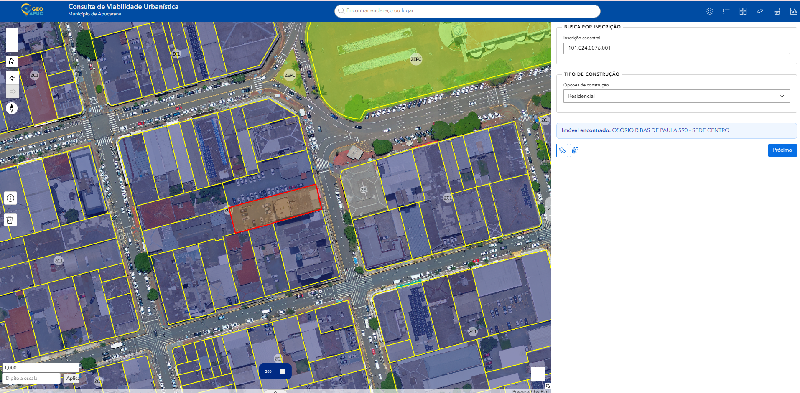

🏗️ Tutorial: Consulta de Viabilidade Urbanística
Município de Apucarana - Guia Prático de Uso

Município de Apucarana - Guia Prático de Uso
Bem-vindo ao tutorial da aplicação Consulta de Viabilidade Urbanística! Esta ferramenta permite verificar as condições urbanísticas de um terreno no município de Apucarana.
💡 Dica: Este tutorial leva aproximadamente 15 minutos para ser concluído. Você pode navegar pelas seções clicando no índice acima.
A parte central da tela exibe o mapa do município de Apucarana.

💡 Você pode ampliar (zoom) e mover o mapa usando o mouse.
À direita, você encontra o painel de consulta com dois campos principais:
No painel lateral, localize o campo "Inscrição cadastral" e digite o número do imóvel.

💡 Se não souber a inscrição cadastral, utilize a barra de busca superior.
Logo abaixo do campo de inscrição, clique no dropdown "Opções de construção" e selecione a finalidade do empreendimento.
Cada tipo de construção está sujeito a regras específicas. Aqui estão as principais categorias:
Inclui casas, sobrados e apartamentos.
Destinado ao comércio e prestação de serviços.
Atividades produtivas e manufatureiras.
Após clicar em "Próximo", o sistema realiza automaticamente uma análise espacial do terreno.
Etapa de validação da geolocalização, exibindo duas visões do lote para confirmação.
Clique em "Gerar Relatório" para emitir o documento oficial de viabilidade urbanística.
Verificar Viabilidade para Construção Residencial.
Qual a diferença entre Viabilidade Urbanística e Viabilidade Econômica?